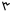

Syriac alphabet
| Syriac alphabet | |
|---|---|
 Estrangela-styled alphabet | |
| Type | Impure Abjad
|
| Languages | Aramaic (Classical Syriac, Western Neo-Aramaic, Assyrian Neo-Aramaic, Chaldean Neo-Aramaic, Turoyo, Christian Palestinian Aramaic), Arabic (Garshuni), Malayalam (Suriyani Malayalam), Sogdian |
Time period | c. 1 AD – present |
Parent systems | |
Child systems | Sogdian |
| Direction | Right-to-left |
| ISO 15924 | Syrc, 135
|
Unicode alias | Syriac |
| |
The Syriac alphabet (ܐܠܦ ܒܝܬ ܣܘܪܝܝܐ ʾālep̄ bêṯ Sūryāyā[a]) is a writing system primarily used to write the Syriac language since the 1st century AD.[1] It is one of the Semitic abjads descending from the Aramaic alphabet through the Palmyrene alphabet,[2] and shares similarities with the Phoenician, Hebrew, Arabic and the traditional Mongolian scripts.
Syriac is written from right to left in horizontal lines. It is a cursive script where most—but not all—letters connect within a word. There is no letter case distinction between upper and lower case letters, though some letters change their form depending on their position within a word. Spaces separate individual words.
All 22 letters are consonants, although there are optional diacritic marks to indicate vowels and other features. In addition to the sounds of the language, the letters of the Syriac alphabet can be used to represent numbers in a system similar to Hebrew and Greek numerals.
Apart from Classical Syriac Aramaic, the alphabet has been used to write other dialects and languages. Several Christian Neo-Aramaic languages from Turoyo to the Northeastern Neo-Aramaic dialects of Assyrian and Chaldean, once vernaculars, primarily began to be written in the 19th century. The Serṭā variant specifically has recently been adapted to write Western Neo-Aramaic, traditionally written in a square Aramaic script closely related to the Hebrew alphabet. Besides Aramaic, when Arabic began to be the dominant spoken language in the Fertile Crescent after the Islamic conquest, texts were often written in Arabic using the Syriac script as knowledge of the Arabic alphabet was not yet widespread; such writings are usually called Karshuni or Garshuni (ܓܪܫܘܢܝ). In addition to Semitic languages, Sogdian was also written with Syriac script, as well as Malayalam, which form was called Suriyani Malayalam.
Alphabet forms[edit]

There are three major variants of the Syriac alphabet: ʾEsṭrangēlā, Maḏnḥāyā and Serṭā.
Classical ʾEsṭrangēlā[edit]


The oldest and classical form of the alphabet is ʾEsṭrangēlā[b] (ܐܣܛܪܢܓܠܐ). The name of the script is thought to derive from the Greek adjective strongýlē (στρογγύλη, 'rounded'),[3] though it has also been suggested to derive from serṭā ʾewwangēlāyā (ܣܪܛܐ ܐܘܢܓܠܝܐ, 'gospel character').[4] Although ʾEsṭrangēlā is no longer used as the main script for writing Syriac, it has received some revival since the 10th century. It is often used in scholarly publications (such as the Leiden University version of the Peshitta), in titles, and in inscriptions. In some older manuscripts and inscriptions, it is possible for any letter to join to the left, and older Aramaic letter forms (especially of ḥeṯ and the lunate mem) are found. Vowel marks are usually not used with ʾEsṭrangēlā, being the oldest form of the script and arising before the development of specialized diacritics.
East Syriac Maḏnḥāyā[edit]
The East Syriac dialect is usually written in the Maḏnḥāyā (ܡܲܕ݂ܢܚܵܝܵܐ, 'Eastern') form of the alphabet. Other names for the script include Swāḏāyā (ܣܘܵܕ݂ܵܝܵܐ, 'conversational' or 'vernacular', often translated as 'contemporary', reflecting its use in writing modern Neo-Aramaic), ʾĀṯōrāyā (ܐܵܬ݂ܘܿܪܵܝܵܐ, 'Assyrian', not to be confused with the traditional name for the Hebrew alphabet), Kaldāyā (ܟܲܠܕܵܝܵܐ, 'Chaldean'), and, inaccurately, "Nestorian" (a term that was originally used to refer to the Church of the East in the Sasanian Empire). The Eastern script resembles ʾEsṭrangēlā somewhat more closely than the Western script.
Vowels[edit]
The Eastern script uses a system of dots above and/or below letters, based on an older system, to indicate vowel sounds not found in the script:
- A dot above and a dot below a letter represent [a], transliterated as a or ă (called ܦܬ݂ܵܚܵܐ, pṯāḥā),
- Two diagonally-placed dots above a letter represent [ɑ], transliterated as ā or â or å (called ܙܩܵܦ݂ܵܐ, zqāp̄ā),
- Two horizontally-placed dots below a letter represent [ɛ], transliterated as e or ĕ (called ܪܒ݂ܵܨܵܐ ܐܲܪܝܼܟ݂ܵܐ, rḇāṣā ʾărīḵā or ܙܠܵܡܵܐ ܦܫܝܼܩܵܐ, zlāmā pšīqā; often pronounced [ɪ] and transliterated as i in the East Syriac dialect),
- Two diagonally-placed dots below a letter represent [e], transliterated as ē (called ܪܒ݂ܵܨܵܐ ܟܲܪܝܵܐ, rḇāṣā karyā or ܙܠܵܡܵܐ ܩܲܫܝܵܐ, zlāmā qašyā),
- The letter waw with a dot below it represents [u], transliterated as ū or u (called ܥܨܵܨܵܐ ܐܲܠܝܼܨܵܐ, ʿṣāṣā ʾălīṣā or ܪܒ݂ܵܨܵܐ, rḇāṣā),
- The letter waw with a dot above it represents [o], transliterated as ō or o (called ܥܨܵܨܵܐ ܪܘܝܼܚܵܐ, ʿṣāṣā rwīḥā or ܪܘܵܚܵܐ, rwāḥā),
- The letter yōḏ with a dot beneath it represents [i], transliterated as ī or i (called ܚܒ݂ܵܨܵܐ, ḥḇāṣā),
- A combination of rḇāṣā karyā (usually) followed by a letter yōḏ represents [e] (possibly *[e̝] in Proto-Syriac), transliterated as ē or ê (called ܐܲܣܵܩܵܐ, ʾăsāqā).
It is thought that the Eastern method for representing vowels influenced the development of the niqqud markings used for writing Hebrew.
In addition to the above vowel marks, transliteration of Syriac sometimes includes ə, e̊ or superscript e (or often nothing at all) to represent an original Aramaic schwa that became lost later on at some point in the development of Syriac. Some transliteration schemes find its inclusion necessary for showing spirantization or for historical reasons. Whether because its distribution is mostly predictable (usually inside a syllable-initial two-consonant cluster) or because its pronunciation was lost, both the East and the West variants of the alphabet traditionally have no sign to represent the schwa.
West Syriac Serṭā[edit]


The West Syriac dialect is usually written in the Serṭā or Serṭo (ܣܶܪܛܳܐ, 'line') form of the alphabet, also known as the Pšīṭā (ܦܫܺܝܛܳܐ, 'simple'), 'Maronite' or the 'Jacobite' script (although the term Jacobite is considered derogatory). Most of the letters are clearly derived from ʾEsṭrangēlā, but are simplified, flowing lines. A cursive chancery hand is evidenced in the earliest Syriac manuscripts, but important works were written in ʾEsṭrangēlā. From the 8th century, the simpler Serṭā style came into fashion, perhaps because of its more economical use of parchment.
Vowels[edit]
The Western script is usually vowel-pointed, with miniature Greek vowel letters above or below the letter which they follow:
- Capital alpha (Α) represents [a], transliterated as a or ă (ܦܬ݂ܳܚܳܐ, pṯāḥā),
- Lowercase alpha (α) represents [ɑ], transliterated as ā or â or å (ܙܩܳܦ݂ܳܐ, Zqāp̄ā; pronounced as [o] and transliterated as o in the West Syriac dialect),
- Lowercase epsilon (ε) represents both [ɛ], transliterated as e or ĕ, and [e], transliterated as ē (ܪܒ݂ܳܨܳܐ, Rḇāṣā),
- Capital eta (H) represents [i], transliterated as ī (ܚܒ݂ܳܨܳܐ, Ḥḇāṣā),
- A combined symbol of capital upsilon (Υ) and lowercase omicron (ο) represents [u], transliterated as ū or u (ܥܨܳܨܳܐ, ʿṣāṣā),
- Lowercase omega (ω), used only in the vocative interjection ʾō (ܐܘّ, 'O!').
Summary table[edit]
|
Egyptian hieroglyphs 32 c. BCE
Hangul 1443 Thaana 18 c. CE (derived from Brahmi numerals) |
The Syriac alphabet consists of the following letters, shown in their isolated (non-connected) forms. When isolated, the letters kāp̄, mīm, and mūn are usually shown with their initial form connected to their final form (see below). The letters ʾālep̄, dālaṯ, hē, waw, zayn, ṣāḏē, rēš and taw (and, in early ʾEsṭrangēlā manuscripts, the letter semkaṯ[5]) do not connect to a following letter within a word; these are marked with an asterisk (*).
| Letter | Sound Value (Classical Syriac) | Numerical Value |
Phoenician Equivalent |
Imperial Aramaic Equivalent |
Hebrew Equivalent | ||||||
|---|---|---|---|---|---|---|---|---|---|---|---|
| Name | Translit. | ʾEsṭrangēlā (classical) |
Maḏnḥāyā (eastern) |
Serṭā (western) |
Unicode
(typing) |
Transliteration | IPA | ||||
| *ܐܠܦ | ʾĀlep̄*[c] | ܐ | ʾ or null mater lectionis: ā |
[ʔ] or ∅ mater lectionis: [ɑ] |
1 | 𐡀 | א | ||||
| ܒܝܬ | Bēṯ | ܒ | hard: b soft: ḇ (also bh, v or β) |
hard: [b] soft: [v] or [w] |
2 | 𐡁 | ב | ||||
| ܓܡܠ | Gāmal | ܓ | hard: g soft: ḡ (also g̱, gh, ġ or γ) |
hard: [ɡ] soft: [ɣ] |
3 | 𐡂 | ג | ||||
| *ܕܠܬ | Dālaṯ* | ܕ | hard: d soft: ḏ (also dh, ð or δ) |
hard: [d] soft: [ð] |
4 | 𐡃 | ד | ||||
| *ܗܐ | Hē* | ܗ | h | [h] | 5 | 𐡄 | ה | ||||
| *ܘܘ | Waw* | ܘ | consonant: w mater lectionis: ū or ō (also u or o) |
consonant: [w] mater lectionis: [u] or [o] |
6 | 𐡅 | ו | ||||
| *ܙܝܢ | Zayn* | ܙ | z | [z] | 7 | 𐡆 | ז | ||||
| ܚܝܬ | Ḥēṯ | ܚ | ḥ (also H, kh, x or ħ) | [ħ], [x] or [χ] | 8 | 𐡇 | ח | ||||
| ܛܝܬ | Ṭēṯ | ܛ | ṭ (also T or ţ) | [tˤ] | 9 | 𐡈 | ט | ||||
| ܝܘܕ | Yōḏ | ܝ | consonant: y mater lectionis: ī (also i) |
consonant: [j] mater lectionis: [i] or [e] |
10 | 𐡉 | י | ||||
| ܟܦ | Kāp̄ | ܟ | hard: k soft: ḵ (also kh or x) |
hard: [k] soft: [x] |
20 | 𐡊 | כ ך | ||||
| ܠܡܕ | Lāmaḏ | ܠ | l | [l] | 30 | 𐡋 | ל | ||||
| ܡܝܡ | Mīm | ܡ | m | [m] | 40 | 𐡌 | מ ם | ||||
| ܢܘܢ | Nūn | ܢ | n | [n] | 50 | 𐡍 | נ ן | ||||
| ܣܡܟܬ | Semkaṯ | ܣ | s | [s] | 60 | 𐡎 | ס | ||||
| ܥܐ | ʿĒ | ܥ | ʿ | [ʕ][d] | 70 | 𐡏 | ע | ||||
| ܦܐ | Pē | ܦ | hard: p soft: p̄ (also p̱, ᵽ, ph or f) |
hard: [p] soft: [f] |
80 | 𐡐 | פ ף | ||||
| *ܨܕܐ | Ṣāḏē* | ܨ | ṣ (also S or ş) | [sˤ] | 90 |  | 𐡑 | צ ץ | |||
| ܩܘܦ | Qōp̄ | ܩ | q (also ḳ) | [q] | 100 | 𐡒 | ק | ||||
| *ܪܝܫ | Rēš* | ܪ | r | [r] | 200 | 𐡓 | ר | ||||
| ܫܝܢ | Šīn | ܫ | š (also sh) | [ʃ] | 300 | 𐡔 | ש | ||||
| *ܬܘ | Taw* | ܬ | hard: t soft: ṯ (also th or θ) |
hard: [t] soft: [θ] |
400 | 𐡕 | ת | ||||
Contextual forms of letters[edit]
| Letter
name |
ʾEsṭrangēlā (classical) | Maḏnḥāyā (eastern) | ||||
|---|---|---|---|---|---|---|
| Unconnected
final |
Connected
final |
Initial or
unconnected medial |
Unconnected
final |
Connected
final |
Initial or
unconnected medial | |
| ʾĀlep̄ | ||||||
| Bēṯ | ||||||
| Gāmal | ||||||
| Dālaṯ | ||||||
| Hē | ||||||
| Waw | ||||||
| Zayn | ||||||
| Ḥēṯ | ||||||
| Ṭēṯ | ||||||
| Yōḏ | ||||||
| Kāp̄ | ||||||
| Lāmaḏ | ||||||
| Mīm | ||||||
| Nūn | ||||||
| Semkaṯ | ||||||
| ʿĒ | ||||||
| Pē | ||||||
| Ṣāḏē | ||||||
| Qōp̄ | ||||||
| Rēš | ||||||
| Šīn | ||||||
| Taw | ||||||
Ligatures[edit]
| Letter
name |
ʾEsṭrangēlā (classical) | Maḏnḥāyā (eastern) | Unicode character(s) |
Description | ||||
|---|---|---|---|---|---|---|---|---|
| Unconnected
final |
Connected
final |
Initial or
unconnected medial |
Unconnected
final |
Connected
final |
Initial or
unconnected medial | |||
| Lāmaḏ-ʾĀlep̄ | ܠܐ | Lāmaḏ and ʾĀlep̄ combined at the end of a word | ||||||
| Taw-ʾĀlep̄ | ܬܐ | Taw and ʾĀlep̄ combined at the end of a word | ||||||
| Hē-Yōḏ | ܗܝ | Hē and Yōḏ combined at the end of a word | ||||||
| Taw-Yōḏ | ܬܝ | Taw and Yōḏ combined at the end of a word | ||||||
Letter alterations[edit]
Matres lectionis[edit]
Three letters act as matres lectionis: rather than being a consonant, they indicate a vowel. ʾālep̄ (ܐ), the first letter, represents a glottal stop, but it can also indicate a vowel, especially at the beginning or the end of a word. The letter waw (ܘ) is the consonant w, but can also represent the vowels o and u. Likewise, the letter yōḏ (ܝ) represents the consonant y, but it also stands for the vowels i and e.
Majlīyānā[edit]
In modern usage, some alterations can be made to represent phonemes not represented in classical phonology. A mark similar in appearance to a tilde (~), called majlīyānā (ܡܲܓ̰ܠܝܼܵܢܵܐ), is placed above or below a letter in the Maḏnḥāyā variant of the alphabet to change its phonetic value (see also: Geresh):
- Added below gāmal: [ɡ] to [d͡ʒ] (voiced palato-alveolar affricate)
- Added below kāp̄: [k] to [t͡ʃ] (voiceless palato-alveolar affricate)
- Added above or below zayn: [z] to [ʒ] (voiced palato-alveolar sibilant)
- Added above šīn: [ʃ] to [ʒ]
Rūkkāḵā and qūššāyā[edit]
In addition to foreign sounds, a marking system is used to distinguish qūššāyā (ܩܘܫܝܐ, 'hard' letters) from rūkkāḵā (ܪܘܟܟܐ, 'soft' letters). The letters bēṯ, gāmal, dālaṯ, kāp̄, pē, and taw, all stop consonants ('hard') are able to be 'spirantized' (lenited) into fricative consonants ('soft'). The system involves placing a single dot underneath the letter to give its 'soft' variant and a dot above the letter to give its 'hard' variant (though, in modern usage, no mark at all is usually used to indicate the 'hard' value):
| Name | Stop | Translit. | IPA | Name | Fricative | Translit. | IPA | Notes |
|---|---|---|---|---|---|---|---|---|
| Bēṯ (qšīṯā) | ܒ݁ | b | [b] | Bēṯ rakkīḵtā | ܒ݂ | ḇ | [v] or [w] | [v] has become [w] in most modern dialects. |
| Gāmal (qšīṯā) | ܓ݁ | g | [ɡ] | Gāmal rakkīḵtā | ܓ݂ | ḡ | [ɣ] | |
| Dālaṯ (qšīṯā) | ܕ݁ | d | [d] | Dālaṯ rakkīḵtā | ܕ݂ | ḏ | [ð] | [d] is left unspirantized in some modern Eastern dialects. |
| Kāp̄ (qšīṯā) | ܟ݁ܟ݁ | k | [k] | Kāp̄ rakkīḵtā | ܟ݂ܟ݂ | ḵ | [x] | |
| Pē (qšīṯā) | ܦ݁ | p | [p] | Pē rakkīḵtā | ܦ݂ or ܦ̮ | p̄ | [f] or [w] | [f] is not found in most modern Eastern dialects. Instead, it either is left unspirantized or sometimes appears as [w]. Pē is the only letter in the Eastern variant of the alphabet that is spirantized by the addition of a semicircle instead of a single dot. |
| Taw (qšīṯā) | ܬ݁ | t | [t] | Taw rakkīḵtā | ܬ݂ | ṯ | [θ] | [t] is left unspirantized in some modern Eastern dialects. |
The mnemonic bḡaḏkp̄āṯ (ܒܓܕܟܦܬ) is often used to remember the six letters that are able to be spirantized (see also: Begadkefat).
In the East Syriac variant of the alphabet, spirantization marks are usually omitted when they interfere with vowel marks. The degree to which letters can be spirantized varies from dialect to dialect as some dialects have lost the ability for certain letters to be spirantized. For native words, spirantization depends on the letter's position within a word or syllable, location relative to other consonants and vowels, gemination, etymology, and other factors. Foreign words do not always follow the rules for spirantization.
Syāmē[edit]
Syriac uses two (usually) horizontal dots[f] above a letter within a word, similar in appearance to diaeresis, called syāmē (ܣܝ̈ܡܐ, literally 'placings', also known in some grammars by the Hebrew name ribbūi [רִבּוּי], 'plural'), to indicate that the word is plural.[6] These dots, having no sound value in themselves, arose before both eastern and western vowel systems as it became necessary to mark plural forms of words, which are indistinguishable from their singular counterparts in regularly-inflected nouns. For instance, the word malkā (ܡܠܟܐ, 'king') is consonantally identical to its plural malkē (ܡܠܟ̈ܐ, 'kings'); the syāmē above the word malkē (ܡܠܟ̈ܐ) clarifies its grammatical number and pronunciation. Irregular plurals also receive syāmē even though their forms are clearly plural: e.g. baytā (ܒܝܬܐ, 'house') and its irregular plural bāttē (ܒ̈ܬܐ, 'houses'). Because of redundancy, some modern usage forgoes syāmē points when vowel markings are present.
There are no firm rules for which letter receives syāmē; the writer has full discretion to place them over any letter. Typically, if a word has at least one rēš, then syāmē are placed over the rēš that is nearest the end of a word (and also replace the single dot above it: ܪ̈). Other letters that often receive syāmē are low-rising letters—such as yōḏ and nūn—or letters that appear near the middle or end of a word.
Besides plural nouns, syāmē are also placed on:
- plural adjectives, including participles (except masculine plural adjectives/participles in the absolute state);
- the cardinal numbers 'two' and the feminine forms of 11-19, though inconsistently;
- and certain feminine plural verbs: the 3rd person feminine plural perfect and the 2nd and 3rd person feminine plural imperfect.
Mṭalqānā[edit]
Syriac uses a line, called mṭalqānā (ܡܛܠܩܢܐ, literally 'concealer', also known by the Latin term linea occultans in some grammars), to indicate a silent letter that can occur at the beginning or middle of a word.[7] In Eastern Syriac, this line is diagonal and only occurs above the silent letter (e.g. ܡܕ݂ܝܼܢ݇ܬܵܐ, 'city', pronounced mḏīttā, not *mḏīntā, with the mṭalqānā over the nūn, assimilating with the taw). The line can only occur above a letter ʾālep̄, hē, waw, yōḏ, lāmaḏ, mīm, nūn, ʿē or rēš (which comprise the mnemonic ܥܡ̈ܠܝ ܢܘܗܪܐ ʿamlay nūhrā, 'the works of light'). In Western Syriac, this line is horizontal and can be placed above or below the letter (e.g. ܡܕ݂ܺܝܢ̄ܬܳܐ, 'city', pronounced mḏīto, not *mḏīnto).
Classically, mṭalqānā was not used for silent letters that occurred at the end of a word (e.g. ܡܪܝ mār[ī], '[my] lord'). In modern Turoyo, however, this is not always the case (e.g. ܡܳܪܝ̱ mor[ī], '[my] lord').
Latin alphabet and romanization[edit]
In the 1930s, following the state policy for minority languages of the Soviet Union, a Latin alphabet for Syriac was developed with some material promulgated.[8] Although it did not supplant the Syriac script, the usage of the Latin script in the Syriac community has still become widespread because most of the Assyrian diaspora is in Europe and the Anglosphere, where the Latin alphabet is predominant. As a result of Westernization, the Latin alphabet has been used for Syriac writing. Some letters are altered and would feature diacritics and macrons to indicate long vowels, schwas and diphthongs. The letters with diacritics and macrons are mostly upheld in educational or formal writing.[9]
| A | B | C | Ç | D | E | F | G | H | I | J | K | L | M | N | O | P | Q | R | S | Ş | T | Ţ | U | V | X | Z | Ƶ | Ь |
The Latin letters below are commonly used when it comes to transliteration from the Syriac script to Latin:[12]
| A | Ā | B | C | D | Ḏ | E | Ē | Ë | F | G | H | Ḥ | I | J | K | L | M | N | O | Ō | P | Q | R | S | Š | Ṣ | T | Ṭ | U | Ū | V | W | X | Y | Z |
- Ā is used to denote a long "a" sound or [ɑː] as heard in "car".
- Ḏ is used to represent a voiced dental fricative, the "th" sound as heard in "that".
- Ē is used to denote an "ee" sound or [eː].
- Ĕ is to represent an "eh" sound or [ɛ], as heard in Ninwĕ or "mare".
- Ḥ represents a voiceless pharyngeal fricative ([ħ]), only upheld by Turoyo and Chaldean speakers.
- Ō represents a long "o" sound or [ɔː].
- Š is a voiceless postalveolar fricative, the English digraph "sh".
- Ṣ denotes an emphatic "s" or "thick s".
- Ṭ is an emphatic "t", as heard in the word ṭla ("three").
- Ū is used to represent an "oo" sound or the close back rounded vowel [uː].
Sometimes additional letters may be used and they tend to be:
- Ḇ may be used in the transliteration of biblical Aramaic to show the voiced bilabial fricative allophone value ("v") of the letter Bēṯ.
- Ī denotes a schwa sound, usually when transliterating biblical Aramaic.
- Ḵ is utilized for the voiceless velar fricative or the "kh" sound.
- Ṯ is used to denote the "th" sound or the voiceless dental fricative.
Unicode[edit]
The Syriac alphabet was added to the Unicode Standard in September, 1999 with the release of version 3.0. Additional letters for Suriyani Malayalam were added in June, 2017 with the release of version 10.0.
Blocks[edit]
The Unicode block for Syriac is U+0700–U+074F:
| Syriac[1][2] Official Unicode Consortium code chart (PDF) | ||||||||||||||||
| 0 | 1 | 2 | 3 | 4 | 5 | 6 | 7 | 8 | 9 | A | B | C | D | E | F | |
| U+070x | ܀ | ܁ | ܂ | ܃ | ܄ | ܅ | ܆ | ܇ | ܈ | ܉ | ܊ | ܋ | ܌ | ܍ | SAM | |
| U+071x | ܐ | ܑ | ܒ | ܓ | ܔ | ܕ | ܖ | ܗ | ܘ | ܙ | ܚ | ܛ | ܜ | ܝ | ܞ | ܟ |
| U+072x | ܠ | ܡ | ܢ | ܣ | ܤ | ܥ | ܦ | ܧ | ܨ | ܩ | ܪ | ܫ | ܬ | ܭ | ܮ | ܯ |
| U+073x | ܰ | ܱ | ܲ | ܳ | ܴ | ܵ | ܶ | ܷ | ܸ | ܹ | ܺ | ܻ | ܼ | ܽ | ܾ | ܿ |
| U+074x | ݀ | ݁ | ݂ | ݃ | ݄ | ݅ | ݆ | ݇ | ݈ | ݉ | ݊ | ݍ | ݎ | ݏ | ||
| Notes | ||||||||||||||||
The Syriac Abbreviation (a type of overline) can be represented with a special control character called the Syriac Abbreviation Mark (U+070F).
The Unicode block for Suriyani Malayalam specific letters is called the Syriac Supplement block and is U+0860–U+086F:
| Syriac Supplement[1][2] Official Unicode Consortium code chart (PDF) | ||||||||||||||||
| 0 | 1 | 2 | 3 | 4 | 5 | 6 | 7 | 8 | 9 | A | B | C | D | E | F | |
| U+086x | ࡠ | ࡡ | ࡢ | ࡣ | ࡤ | ࡥ | ࡦ | ࡧ | ࡨ | ࡩ | ࡪ | |||||
| Notes | ||||||||||||||||
HTML code table[edit]
Note: HTML numeric character references can be in decimal format (&#DDDD;) or hexadecimal format (&#xHHHH;). For example, ܕ and ܕ (1813 in decimal) both represent U+0715 SYRIAC LETTER DALATH.
Ālep̄ bēṯ[edit]
| ܕ | ܓ | ܒ | ܐ |
| ܕ | ܓ | ܒ | ܐ |
|---|---|---|---|
| ܚ | ܙ | ܘ | ܗ |
| ܚ | ܙ | ܘ | ܗ |
| ܠ | ܟܟ | ܝ | ܛ |
| ܠ | ܟ | ܝ | ܛ |
| ܥ | ܣ | ܢܢ | ܡܡ |
| ܥ | ܤ | ܢ | ܡ |
| ܪ | ܩ | ܨ | ܦ |
| ܪ | ܩ | ܨ | ܦ |
| ܬ | ܫ | ||
| ܬ | ܫ |
Vowels and unique characters[edit]
| ܲ | ܵ |
| ܲ | ܵ |
|---|---|
| ܸ | ܹ |
| ܸ | ܹ |
| ܼ | ܿ |
| ܼ | ܿ |
| ̈ | ̰ |
| ̈ | ̰ |
| ݁ | ݂ |
| ݁ | ݂ |
| ܀ | ܂ |
| ܀ | ܂ |
| ܄ | ݇ |
| ܄ | ݇ |
See also[edit]
- Abjad
- Alphabet
- Aramaic alphabet
- Aramaic language
- Mandaic language
- Mongolian script
- Sogdian alphabet
- Syriac language
- Syriac Malayalam
- Old Uyghur alphabet
- History of the alphabet
- List of writing systems
Notes[edit]
- ^ Also ܐܒܓܕ ܣܘܪܝܝܐ ʾabgad Sūryāyā.
- ^ Also pronounced/transliterated Estrangelo in Western Syriac.
- ^ Also pronounced ʾĀlap̄ or ʾOlaf (ܐܳܠܰܦ) in Western Syriac.
- ^ Among most Assyrian Neo-Aramaic speakers, the pharyngeal sound of ʿĒ (/ʕ/) is not pronounced as such; rather, it typically merges into the plain sound of ʾĀlep̄ ([ʔ] or ∅) or geminates a previous consonant.
- ^ In the final position following Dālaṯ or Rēš, ʾĀlep̄ takes the normal form rather than the final form in the Maḏnḥāyā variant of the alphabet.
- ^ In some Serṭā usages, the syāmē dots are placed diagonally when they appear above the letter Lāmaḏ.
References[edit]
- ^ "Syriac alphabet". Encyclopædia Britannica Online. Retrieved June 16, 2012.
- ^ P. R. Ackroyd,C. F. Evans (1975). The Cambridge History of the Bible: Volume 1, From the Beginnings to Jerome. p. 26.
- ^ Hatch, William (1946). An Album of Dated Syriac Manuscripts. Boston: The American Academy of Arts and Sciences, reprinted in 2002 by Gorgias Press. p. 24. ISBN 1-931956-53-7.
- ^ Nestle, Eberhard (1888). Syrische Grammatik mit Litteratur, Chrestomathie und Glossar. Berlin: H. Reuther's Verlagsbuchhandlung. [translated to English as Syriac grammar with bibliography, chrestomathy and glossary, by R. S. Kennedy. London: Williams & Norgate 1889. p. 5].
- ^ Coakley, J. F. (2002). Robinson's Paradigms and Exercises in Syriac Grammar (5th ed.). Oxford University Press. p. 141. ISBN 978-0-19-926129-1.
- ^ Nöldeke, Theodor and Julius Euting (1880). Kurzgefasste syrische Grammatik. Leipzig: T.O. Weigel. [translated to English as Compendious Syriac Grammar, by James A. Crichton. London: Williams & Norgate 1904. 2003 edition. pp. 10–11. ISBN 1-57506-050-7]
- ^ Nöldeke, Theodor and Julius Euting (1880). Kurzgefasste syrische Grammatik. Leipzig: T.O. Weigel. [translated to English as Compendious Syriac Grammar, by James A. Crichton. London: Williams & Norgate 1904. 2003 edition. pp. 11–12. ISBN 1-57506-050-7]
- ^ Moscati, Sabatino, et al. The Comparative Grammar of Semitic Languages. Harrassowitz, Wiesbaden, Germany, 1980.
- ^ S. P. Brock, "Three Thousand Years of Aramaic literature", in Aram,1:1 (1989)
- ^ Friedrich, Johannes (1959). "Neusyrisches in Lateinschrift aus der Sowjetunion". Zeitschrift der Deutschen Morgenländischen Gesellschaft (in German) (109): 50–81.
- ^ Polotsky, Hans Jakob (1961). "Studies in Modern Syriac". Journal of Semitic Studies. 6 (1): 1–32.
- ^ Syriac Romanization Table
- ^ Nicholas Awde; Nineb Lamassu; Nicholas Al-Jeloo (2007). Aramaic (Assyrian/Syriac) Dictionary & Phrasebook: Swadaya-English, Turoyo-English, English-Swadaya-Turoyo. Hippocrene Books. ISBN 978-0-7818-1087-6.
Sources[edit]
- Coakley, J. F. (2002). Robinson's Paradigms and Exercises in Syriac Grammar (5th ed.). Oxford University Press. ISBN 978-0-19-926129-1.
- Hatch, William (1946). An Album of Dated Syriac Manuscripts. Boston: The American Academy of Arts and Sciences, reprinted in 2002 by Gorgias Press. ISBN 1-931956-53-7.
- Kiraz, George (2015). The Syriac Dot: a Short History. Piscataway, NJ: Gorgias Press. ISBN 978-1-4632-0425-9.
- Michaelis, Ioannis Davidis (1784). Grammatica Syriaca.
- Nestle, Eberhard (1888). Syrische Grammatik mit Litteratur, Chrestomathie und Glossar. Berlin: H. Reuther's Verlagsbuchhandlung. [translated to English as Syriac grammar with bibliography, chrestomathy and glossary, by R. S. Kennedy. London: Williams & Norgate 1889].
- Nöldeke, Theodor and Julius Euting (1880). Kurzgefasste syrische Grammatik. Leipzig: T.O. Weigel. [translated to English as Compendious Syriac Grammar, by James A. Crichton. London: Williams & Norgate 1904. 2003 edition: ISBN 1-57506-050-7].
- Phillips, George (1866). A Syriac Grammar. Cambridge: Deighton, Bell, & Co.; London: Bell & Daldy.
- Robinson, Theodore Henry (1915). Paradigms and Exercises in Syriac Grammar. Oxford University Press. ISBN 0-19-926129-6.
- Rudder, Joshua. Learn to Write Aramaic: A Step-by-Step Approach to the Historical & Modern Scripts. n.p.: CreateSpace Independent Publishing Platform, 2011. 220 pp. ISBN 978-1461021421 Includes the Estrangela (pp. 59–113), Madnhaya (pp. 191–206), and the Western Serto (pp. 173–190) scripts.
- Segal, J. B. (1953). The Diacritical Point and the Accents in Syriac. Oxford University Press, reprinted in 2003 by Gorgias Press. ISBN 1-59333-032-4.
- Thackston, Wheeler M. (1999). Introduction to Syriac. Bethesda, MD: Ibex Publishers, Inc. ISBN 0-936347-98-8.
External links[edit]
| Wikimedia Commons has media related to Syriac alphabet. |
- The Syriac alphabet at Omniglot.com
- The Syriac alphabet at Ancientscripts.com
- Unicode Entity Codes for the Syriac Script
- Meltho Fonts for Syriac
- How to write Aramaic – learn the Syriac cursive scripts
- Aramaic and Syriac handwriting ʾEsṭrangēlā (classical)
- Learn Assyrian (Syriac-Aramaic) OnLine Maḏnḥāyā (eastern)
- GNU FreeFont Unicode font family with Syriac range in its sans-serif face.
- Learn Syriac Latin Alphabet on Wikiversity

Ethno-linguistic group(s) indigenous to the Middle East with various additional self-identification, such as Syriacs, Arameans, or Chaldeans | |||||||||
| Identity | |||||||||
| Syriac Christianity |
| ||||||||
| Aramaic/Syriac languages | |||||||||
| Culture | |||||||||
| History (including related contexts) |
| ||||||||
| By country |
| ||||||||
| Politics | |||||||||


{kind=link}
{kind=link}